CODING AGENTS AS PIXEL WORLD MODELS
traex/GPT-6.1-Sol · 0135
点击播放 · 原生 RGB 像素
逐轮保存的候选
回放视频、检查图与代码变化。
每份候选均可单独播放。实际图片检查记录在下方工具轨迹中。
候选 01播放与检查图
点击播放 · 原生 RGB 像素
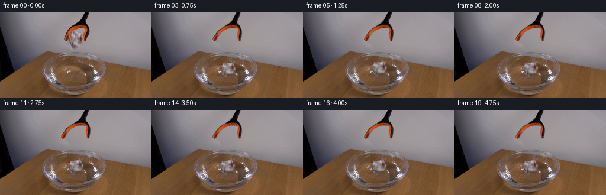
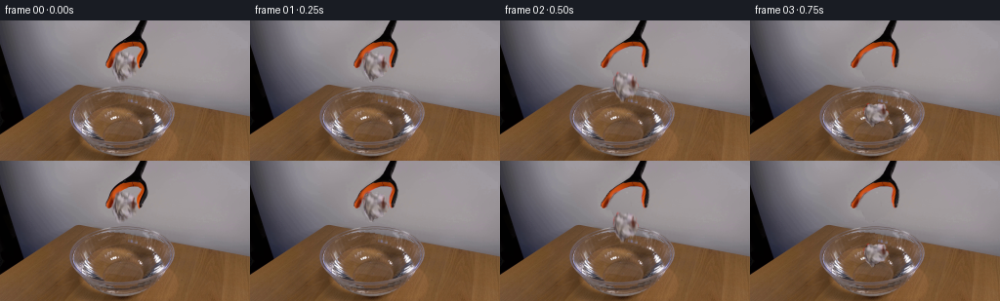
展开代码变化
--- 上一保存版本
+++ 本次保存版本
@@ -0,0 +1,188 @@
+from pathlib import Path
+import math
+import numpy as np
+from PIL import Image, ImageDraw, ImageFilter
+from scipy.ndimage import gaussian_filter, map_coordinates, distance_transform_edt
+import cv2
+import artifact_io
+
+ROOT = Path(__file__).resolve().parent
+W,H=256,144
+S=4
+PAPER=[(122,31.5),(125,32.5),(127,34.8),(131,34.8),(133,34.2),(135.4,35.8),(138.4,36.2),(139.3,40),(139,44),(140.8,46.7),(140.2,50.5),(138.2,53),(136.2,53.5),(136,56.3),(133.4,57.3),(131.3,56.3),(129.2,58.5),(126,58.4),(124.1,61.3),(121.6,61.3),(121.1,58.3),(119.5,56.6),(118.1,54),(117.3,50.1),(116.8,47),(116.4,43.2),(117.2,38.2),(118.7,35.3),(120.5,35)]
+TOOL=[(141.6,-2),(150.7,-2),(148.2,6),(145.1,14.7),(146.7,19.4),(149.5,24.3),(150.4,30.4),(149,36),(146.5,42.3),(144.4,47.9),(142.4,48.3),(141,45.8),(140.8,41.3),(142.1,36.4),(145.2,29.3),(144.7,26.9),(140,26),(134,26.1),(128.6,28),(123.8,30.5),(119.5,34.5),(116.8,41.6),(114,47.7),(111.4,48.9),(109.1,47.2),(108.6,44.4),(111.2,36.7),(114.5,30.7),(120,25.7),(126.1,21.7),(132.5,17.5),(136.6,13.3),(139.8,6)]
+
+def polygon(poly):
+ im=Image.new('L',(W*S,H*S))
+ ImageDraw.Draw(im).polygon([(round(x*S),round(y*S)) for x,y in poly],fill=255)
+ return np.array(im.resize((W,H),Image.Resampling.LANCZOS).filter(ImageFilter.GaussianBlur(.32))).astype(float)/255
+
+def over(dst, rgb, a):
+ return dst*(1-a[:,:,None])+rgb*a[:,:,None]
+
+def warp(a,xx,yy):
+ if a.ndim==2:
+ return map_coordinates(a,[yy,xx],order=1,mode='constant',cval=0)
+ return np.stack([map_coordinates(a[:,:,c],[yy,xx],order=1,mode='constant',cval=0) for c in range(a.shape[-1])],axis=-1)
+
+
+def main():
+ src=np.asarray(Image.open(ROOT/'first_frame.png').convert('RGB'),dtype=float)
+ yy,xx=np.mgrid[:H,:W].astype(float)
+ pm=polygon(PAPER); tm=polygon(TOOL)
+ union=np.maximum(pm,tm)
+ # Recover only the plain, softly lit wall hidden by the released paper
+ # and the fingers, leaving every visible part of the set untouched.
+ excluded=cv2.dilate((union>.008).astype('uint8'),np.ones((7,7),np.uint8))>0
+ fit=(xx>88)&(xx<173)&(yy<68)&~excluded
+ xn=(xx-130)/40; yn=(yy-34)/34
+ terms=np.stack([np.ones_like(xx),xn,yn,xn*xn,xn*yn,yn*yn,xn*xn*yn,xn*yn*yn],axis=-1)
+ coef=np.linalg.lstsq(terms[fit],src[fit],rcond=None)[0]
+ wall=terms@coef
+ rng=np.random.default_rng(86)
+ grain=gaussian_filter(rng.normal(0,.65,(H,W)),.6)
+ wall+=grain[:,:,None]
+ remove=cv2.dilate((union>.015).astype('uint8'),np.ones((3,3),np.uint8)).astype(float)
+ remove=gaussian_filter(remove,.6)
+ clean=over(src,wall,remove)
+ Image.fromarray(np.uint8(np.clip(clean,0,255))).save(ROOT/'.tmp/clean.png')
+
+ # The photographic surfaces are used as textures. At their soft edges,
+ # remove the original wall contribution before moving the objects.
+ def foreground(mask):
+ alpha=np.maximum(mask,.03)[:,:,None]
+ rgb=(src-wall*(1-alpha))/alpha
+ return np.clip(rgb,0,255)
+ paper_rgb=foreground(pm)
+ tool_rgb=foreground(tm)
+
+ # Smooth support for effects confined to the water, below the glass rim.
+ water_r=np.sqrt(((xx-126)/39.8)**2+((yy-103.2)/18.4)**2)
+ water_mask=np.clip((1-water_r)*9,0,1)
+ water_mask*=1/(1+np.exp(-(yy-86)/1.2))
+ frames=[src.astype(np.uint8)]
+ for k in range(1,20):
+ t=k/4
+ im=clean.copy()
+ impact=.625
+ age=t-impact
+ # A brief free fall followed by buoyancy, damped bobbing and drift.
+ if t<impact:
+ fall=max(0,t-.22)
+ px=128.3+.5*fall
+ py=46.2+265*fall*fall
+ angle=math.radians(-3-22*fall)
+ sx=1.; sy=1.
+ wet=0.
+ else:
+ tau=t-impact
+ px=128.8-1.15*(1-math.exp(-tau/.9))+.30*math.sin(tau*2.4)*math.exp(-tau/3)
+ py=94.0+1.65*(1-math.exp(-tau/1.6))+1.8*math.sin(tau*8.8)*math.exp(-tau/0.65)
+ angle=math.radians(-12-5*(1-math.exp(-tau/1.1))+2.2*math.sin(tau*4)*math.exp(-tau))
+ sx=1.015+.025*(1-math.exp(-tau/1.5))
+ sy=.84-.035*(1-math.exp(-tau/1.2))-.075*math.exp(-tau/.17)
+ wet=1-math.exp(-tau/1.4)
+
+ # Surface normals of the outgoing capillary/gravity waves refract
+ # the wood visible through the otherwise unchanged transparent bowl.
+ if age>0:
+ dx=xx-128.5; dy=(yy-103.3)/.40
+ radius=np.sqrt(dx*dx+dy*dy)
+ safe=np.maximum(radius,.8)
+ slope=np.zeros((H,W),float)
+ intensity=np.zeros_like(slope)
+ for delay,amp in [(0,1.),(.13,.60),(.28,.34)]:
+ a=age-delay
+ if a<0: continue
+ r=5+23.0*a
+ if r>56: continue
+ delta=radius-r
+ decay=math.exp(-a/1.05)
+ env=np.exp(-delta**2/(2*1.5**2))
+ asym=.85+.15*np.cos(np.arctan2(dy,dx)*3+.7)
+ sl=amp*decay*env*delta/1.5*asym
+ slope+=sl
+ intensity+=sl*3.6
+ disp=slope*.9
+ rx=xx+disp*dx/safe
+ ry=yy+disp*dy/safe*.4
+ refracted=warp(clean,rx,ry)
+ im=over(im,refracted,water_mask)
+ im+=intensity[:,:,None]*water_mask[:,:,None]*np.array([.9,.98,1.07])
+ # Soft contact shadow and a weak paper reflection on the water.
+ if age<0:
+ strength=.08+.12*np.clip((py-46)/45,0,1)
+ spread=11-3*np.clip((py-46)/45,0,1)
+ else:
+ strength=.19
+ spread=11
+ shadow=np.exp(-((xx-px)/spread)**2/2-((yy-103.8)/3.3)**2/2)*strength*water_mask
+ im*=1-shadow[:,:,None]
+
+ # Rotate and foreshorten the same crumpled paper, not a new object.
+ ca,sa=math.cos(angle),math.sin(angle)
+ dx=xx-px; dy=yy-py
+ u=(ca*dx+sa*dy)/sx+128.1
+ v=(-sa*dx+ca*dy)/sy+46.2
+ alpha=warp(pm,u,v)
+ tex=warp(paper_rgb,u,v)
+ # Wetting starts at the lower creases and progresses only gradually.
+ lower=np.clip((v-39)/22,0,1)
+ damp=(.026+.10*lower)*wet
+ tex*=1-damp[:,:,None]
+ tex+=np.stack([lower*wet*.6,lower*wet*.25,-lower*wet*.1],axis=-1)
+ if age>=0:
+ # Water-darkened bottom folds remain in the bowl, with a subtle
+ # distorted reflection beneath the little floating paper wad.
+ ryy=103.6+(103.6-yy)*1.7
+ rdx=xx-px+.7*np.sin((yy-102)*1.8+age*2)*np.exp(-age/1.5)
+ rdy=ryy-py
+ ru=(ca*rdx+sa*rdy)/sx+128.1
+ rv=(-sa*rdx+ca*rdy)/sy+46.2
+ reflect_a=warp(pm,ru,rv)
+ reflect_a=gaussian_filter(reflect_a,1)*.13*water_mask*np.clip((yy-102)/2,0,1)*np.exp(-np.maximum(yy-104,0)/9)
+ reflect=warp(paper_rgb,ru,rv)*.66
+ im=over(im,reflect,reflect_a)
+ submerged=np.clip((yy-102.7)/3,0,1)
+ tex=tex*(1-submerged[:,:,None]*.12)+im*submerged[:,:,None]*.12
+ # Motion blur confined to the fast moving paper during the fall.
+ if t<impact and py>55:
+ vel=530*max(0,t-.22)
+ blur=min(2.8,vel/90)
+ aa=np.zeros_like(alpha); rr=np.zeros_like(tex)
+ for dt in np.linspace(-blur/2,blur/2,5):
+ aa0=warp(pm,u-sa*dt/sx,v-ca*dt/sy)
+ tt0=warp(paper_rgb,u-sa*dt/sx,v-ca*dt/sy)
+ aa+=aa0/5; rr+=aa0[:,:,None]*tt0/5
+ tex=rr/np.maximum(aa[:,:,None],1e-7); alpha=aa
+ im=over(im,tex,alpha)
+
+ # Small displaced-water beads only at the first impact, not a large
+ # splash: crumpled paper is light and quickly floats.
+ if 0<age<.35:
+ splash=Image.new('RGBA',(W*S,H*S),(0,0,0,0));d=ImageDraw.Draw(splash)
+ q=age/.35
+ for x0,y0,xvel,yvel,r in [(116,101,-5,-17,.53),(141,101,7,-21,.60),(137,105,6,-13,.45),(122,103,-7,-12,.40)]:
+ xb=x0+xvel*age; yb=y0+yvel*age+42*age*age
+ al=int(105*(1-q))
+ d.ellipse(((xb-r)*S,(yb-r*.75)*S,(xb+r)*S,(yb+r*.75)*S),fill=(207,213,214,al))
+ sp=np.asarray(splash.resize((W,H),Image.Resampling.LANCZOS),float)
+ im=over(im,sp[:,:,:3],sp[:,:,3]/255)
+
+ # Open the two curved jaws smoothly, keeping the shaft suspended in
+ # precisely the same location throughout the locked-off shot.
+ opening=5.5*np.clip((t-.10)/.36,0,1)
+ ease=np.clip((yy-20)/28,0,1)
+ ease=ease*ease*(3-2*ease)
+ branch=np.where(xx<135,-1.,1.)
+ tu=xx-branch*opening*ease
+ tv=yy
+ ta=warp(tm,tu,tv); tr=warp(tool_rgb,tu,tv)
+ im=over(im,tr,ta)
+ frames.append(np.uint8(np.clip(np.rint(im),0,255)))
+ frames=np.stack(frames)
+ artifact_io.save(frames,ROOT)
+
+if __name__=='__main__':
+ (ROOT/'.tmp').mkdir(exist_ok=True)
+ main()
候选 02播放与检查图
点击播放 · 原生 RGB 像素
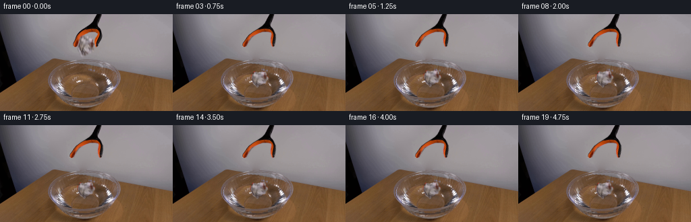
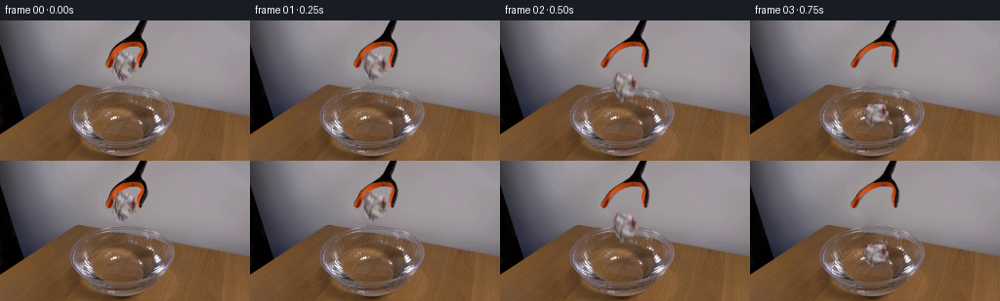
展开代码变化
--- 上一保存版本
+++ 本次保存版本
@@ -4,6 +4,8 @@
from PIL import Image, ImageDraw, ImageFilter
from scipy.ndimage import gaussian_filter, map_coordinates, distance_transform_edt
import cv2
+from scipy.sparse import lil_matrix
+from scipy.sparse.linalg import spsolve
import artifact_io
ROOT = Path(__file__).resolve().parent
@@ -42,9 +44,27 @@
rng=np.random.default_rng(86)
grain=gaussian_filter(rng.normal(0,.65,(H,W)),.6)
wall+=grain[:,:,None]
- remove=cv2.dilate((union>.015).astype('uint8'),np.ones((3,3),np.uint8)).astype(float)
- remove=gaussian_filter(remove,.6)
- clean=over(src,wall,remove)
+ # Harmonic continuation of the small residual from the visible wall
+ # prevents an object-shaped patch at the restoration boundary.
+ hole=cv2.dilate((union>.008).astype('uint8'),np.ones((9,9),np.uint8))>0
+ locations=np.argwhere(hole)
+ labels=np.full((H,W),-1,dtype=int)
+ labels[hole]=np.arange(len(locations))
+ A=lil_matrix((len(locations),len(locations)))
+ b=np.zeros((len(locations),3))
+ residual=src-wall
+ for i,(y,x) in enumerate(locations):
+ count=0
+ for ny,nx in [(y-1,x),(y+1,x),(y,x-1),(y,x+1)]:
+ if not(0<=ny<H and 0<=nx<W): continue
+ count+=1
+ j=labels[ny,nx]
+ if j>=0: A[i,j]=-1
+ else: b[i]+=residual[ny,nx]
+ A[i,i]=count
+ correction=spsolve(A.tocsr(),b)
+ clean=src.copy()
+ clean[hole]=wall[hole]+correction
Image.fromarray(np.uint8(np.clip(clean,0,255))).save(ROOT/'.tmp/clean.png')
# The photographic surfaces are used as textures. At their soft edges,
@@ -102,7 +122,7 @@
asym=.85+.15*np.cos(np.arctan2(dy,dx)*3+.7)
sl=amp*decay*env*delta/1.5*asym
slope+=sl
- intensity+=sl*3.6
+ intensity+=sl*5.2
disp=slope*.9
rx=xx+disp*dx/safe
ry=yy+disp*dy/safe*.4
候选 03播放与检查图
点击播放 · 原生 RGB 像素
展开代码变化
--- 上一保存版本
+++ 本次保存版本
@@ -114,7 +114,7 @@
for delay,amp in [(0,1.),(.13,.60),(.28,.34)]:
a=age-delay
if a<0: continue
- r=5+23.0*a
+ r=7+28.0*a
if r>56: continue
delta=radius-r
decay=math.exp(-a/1.05)
@@ -122,7 +122,7 @@
asym=.85+.15*np.cos(np.arctan2(dy,dx)*3+.7)
sl=amp*decay*env*delta/1.5*asym
slope+=sl
- intensity+=sl*5.2
+ intensity+=sl*7.5 + amp*decay*env*1.8*asym
disp=slope*.9
rx=xx+disp*dx/safe
ry=yy+disp*dy/safe*.4
可观测工具轨迹
实际执行的命令与返回图片。
命令 1exit 0
/bin/bash -lc "ls -la && cat prompt.txt && printf '\\n--- RULES ---\\n' && cat GENERATION_RULES.md"
命令 2exit 0
/bin/bash -lc "cat artifact_io.py && python - <<'PY'
from PIL import Image
im=Image.open('first_frame.png'); print(im.size); im.resize((1024,576)).save('.tmp/first_large.png')
PY"命令 3exit 0
/bin/bash -lc "python - <<'PY'
from PIL import Image,ImageDraw
im=Image.open('first_frame.png').resize((1024,576)); d=ImageDraw.Draw(im)
for x in range(80,181,10):
d.line((x*4,0,x*4,576),fill=(255,0,0),width=1); d.text((x*4,2),str(x),fill=(255,0,0))
for y in range(10,141,10):
d.line((320,y*4,720,y*4),fill=(255,0,0),width=1); d.text((322,y*4),str(y),fill=(255,0,0))
im.save('.tmp/grid.png')
PY"命令 4exit 0
/bin/bash -lc "python - <<'PY'
from PIL import Image
im=Image.open('first_frame.png'); im.crop((103,15,156,66)).resize((636,612),Image.Resampling.NEAREST).save('.tmp/crop.png')
import importlib.util
for x in ['cv2','scipy','numpy','PIL']:
print(x, bool(importlib.util.find_spec(x)))
PY"命令 5exit 0
/bin/bash -lc "cat > .tmp/masks_preview.py <<'PY'
from PIL import Image,ImageDraw,ImageFilter
import numpy as np
im=Image.open('first_frame.png'); S=6
polyp=[(122,31.5),(125,32.5),(127,34.8),(131,34.8),(133,34.2),(135.4,35.8),(138.4,36.2),(139.3,40),(139,44),(140.8,46.7),(140.2,50.5),(138.2,53),(136.2,53.5),(136,56.3),(133.4,57.3),(131.3,56.3),(129.2,58.5),(126,58.4),(124.1,61.3),(121.6,61.3),(121.1,58.3),(119.5,56.6),(118.1,54),(117.3,50.1),(116.8,47),(116.4,43.2),(117.2,38.2),(118.7,35.3),(120.5,35)]
polyt=[(141.6,-1),(150.7,-1),(148.2,6),(145.1,14.7),(146.7,19.4),(149.5,24.3),(150.4,30.4),(149,36),(146.5,42.3),(144.4,47.9),(142.4,48.3),(141,45.8),(140.8,41.3),(142.1,36.4),(145.2,29.3),(144.7,26.9),(140,26),(134,26.1),(128.6,28),(123.8,30.5),(119.5,34.5),(116.8,41.6),(114,47.7),(111.4,48.9),(109.1,47.2),(108.6,44.4),(111.2,36.7),(114.5,30.7),(120,25.7),(126.1,21.7),(132.5,17.5),(136.6,13.3),(139.8,6)]
for name,poly in [('paper',polyp),('tool',polyt)]:
mask=Image.new('L',(256*S,144*S)); d=ImageDraw.Draw(mask); d.polygon([(round(x*S),round(y*S)) for x,y in poly],fill=255)
mask=mask.resize((256,144),Image.Resampling.LANCZOS).filter(ImageFilter.GaussianBlur(.35));mask.save('.tmp/'+name+'_mask.png')
a=np.array(mask)/255.; rgb=np.array(im).astype(float); rgb=rgb*a[...,None]+np.array([20,80,150])*(1-a[...,None]); Image.fromarray(rgb.astype('uint8')).crop((101,14,158,68)).resize((570,540)).save('.tmp/'+name+'_cut.png')
PY
python .tmp/masks_preview.py"命令 6exit 0
/bin/bash -lc "cat > generate.py <<'PY'
from pathlib import Path
import math
import numpy as np
from PIL import Image, ImageDraw, ImageFilter
from scipy.ndimage import gaussian_filter, map_coordinates, distance_transform_edt
import cv2
import artifact_io
ROOT = Path(__file__).resolve().parent
W,H=256,144
S=4
PAPER=[(122,31.5),(125,32.5),(127,34.8),(131,34.8),(133,34.2),(135.4,35.8),(138.4,36.2),(139.3,40),(139,44),(140.8,46.7),(140.2,50.5),(138.2,53),(136.2,53.5),(136,56.3),(133.4,57.3),(131.3,56.3),(129.2,58.5),(126,58.4),(124.1,61.3),(121.6,61.3),(121.1,58.3),(119.5,56.6),(118.1,54),(117.3,50.1),(116.8,47),(116.4,43.2),(117.2,38.2),(118.7,35.3),(120.5,35)]
TOOL=[(141.6,-2),(150.7,-2),(148.2,6),(145.1,14.7),(146.7,19.4),(149.5,24.3),(150.4,30.4),(149,36),(146.5,42.3),(144.4,47.9),(142.4,48.3),(141,45.8),(140.8,41.3),(142.1,36.4),(145.2,29.3),(144.7,26.9),(140,26),(134,26.1),(128.6,28),(123.8,30.5),(119.5,34.5),(116.8,41.6),(114,47.7),(111.4,48.9),(109.1,47.2),(108.6,44.4),(111.2,36.7),(114.5,30.7),(120,25.7),(126.1,21.7),(132.5,17.5),(136.6,13.3),(139.8,6)]
def polygon(poly):
im=Image.new('L',(W*S,H*S))
ImageDraw.Draw(im).polygon([(round(x*S),round(y*S)) for x,y in poly],fill=255)
return np.array(im.resize((W,H),Image.Resampling.LANCZOS).filter(ImageFilter.GaussianBlur(.32))).astype(float)/255
def over(dst, rgb, a):
return dst*(1-a[:,:,None])+rgb*a[:,:,None]
def warp(a,xx,yy):
if a.ndim==2:
return map_coordinates(a,[yy,xx],order=1,mode='constant',cval=0)
return np.stack([map_coordinates(a[:,:,c],[yy,xx],order=1,mode='constant',cval=0) for c in range(a.shape[-1])],axis=-1)
def main():
src=np.asarray(Image.open(ROOT/'first_frame.png').convert('RGB'),dtype=float)
yy,xx=np.mgrid[:H,:W].astype(float)
pm=polygon(PAPER); tm=polygon(TOOL)
union=np.maximum(pm,tm)
# Recover only the plain, softly lit wall hidden by the released paper
# and the fingers, leaving every visible part of the set untouched.
excluded=cv2.dilate((union>.008).astype('uint8'),np.ones((7,7),np.uint8))>0
fit=(xx>88)&(xx<173)&(yy<68)&~excluded
xn=(xx-130)/40; yn=(yy-34)/34
terms=np.stack([np.ones_like(xx),xn,yn,xn*xn,xn*yn,yn*yn,xn*xn*yn,xn*yn*yn],axis=-1)
coef=np.linalg.lstsq(terms[fit],src[fit],rcond=None)[0]
wall=terms@coef
rng=np.random.default_rng(86)
grain=gaussian_filter(rng.normal(0,.65,(H,W)),.6)
wall+=grain[:,:,None]
remove=cv2.dilate((union>.015).astype('uint8'),np.ones((3,3),np.uint8)).astype(float)
remove=gaussian_filter(remove,.6)
clean=over(src,wall,remove)
Image.fromarray(np.uint8(np.clip(clean,0,255))).save(ROOT/'.tmp/clean.png')
# The photographic surfaces are used as textures. At their soft edges,
# remove the original wall contribution before moving the objects.
def foreground(mask):
alpha=np.maximum(mask,.03)[:,:,None]
rgb=(src-wall*(1-alpha))/alpha
return np.clip(rgb,0,255)
paper_rgb=foreground(pm)
tool_rgb=foreground(tm)
# Smooth support for effects confined to the water, below the glass rim.
water_r=np.sqrt(((xx-126)/39.8)**2+((yy-103.2)/18.4)**2)
water_mask=np.clip((1-water_r)*9,0,1)
water_mask*=1/(1+np.exp(-(yy-86)/1.2))
frames=[src.astype(np.uint8)]
for k in range(1,20):
t=k/4
im=clean.copy()
impact=.625
age=t-impact
# A brief free fall followed by buoyancy, damped bobbing and drift.
if t<impact:
fall=max(0,t-.22)
px=128.3+.5*fall
py=46.2+265*fall*fall
angle=math.radians(-3-22*fall)
sx=1.; sy=1.
wet=0.
else:
tau=t-impact
px=128.8-1.15*(1-math.exp(-tau/.9))+.30*math.sin(tau*2.4)*math.exp(-tau/3)
py=94.0+1.65*(1-math.exp(-tau/1.6))+1.8*math.sin(tau*8.8)*math.exp(-tau/0.65)
angle=math.radians(-12-5*(1-math.exp(-tau/1.1))+2.2*math.sin(tau*4)*math.exp(-tau))
sx=1.015+.025*(1-math.exp(-tau/1.5))
sy=.84-.035*(1-math.exp(-tau/1.2))-.075*math.exp(-tau/.17)
wet=1-math.exp(-tau/1.4)
# Surface normals of the outgoing capillary/gravity waves refract
# the wood visible through the otherwise unchanged transparent bowl.
if age>0:
dx=xx-128.5; dy=(yy-103.3)/.40
radius=np.sqrt(dx*dx+dy*dy)
safe=np.maximum(radius,.8)
slope=np.zeros((H,W),float)
intensity=np.zeros_like(slope)
for delay,amp in [(0,1.),(.13,.60),(.28,.34)]:
a=age-delay
if a<0: continue
r=5+23.0*a
if r>56: continue
delta=radius-r
decay=math.exp(-a/1.05)
env=np.exp(-delta**2/(2*1.5**2))
asym=.85+.15*np.cos(np.arctan2(dy,dx)*3+.7)
sl=amp*decay*env*delta/1.5*asym
slope+=sl
intensity+=sl*3.6
disp=slope*.9
rx=xx+disp*dx/safe
ry=yy+disp*dy/safe*.4
refracted=warp(clean,rx,ry)
im=over(im,refracted,water_mask)
im+=intensity[:,:,None]*water_mask[:,:,None]*np.array([.9,.98,1.07])
# Soft contact shadow and a weak paper reflection on the water.
if age<0:
strength=.08+.12*np.clip((py-46)/45,0,1)
spread=11-3*np.clip((py-46)/45,0,1)
else:
strength=.19
spread=11
shadow=np.exp(-((xx-px)/spread)**2/2-((yy-103.8)/3.3)**2/2)*strength*water_mask
im*=1-shadow[:,:,None]
# Rotate and foreshorten the same crumpled paper, not a new object.
ca,sa=math.cos(angle),math.sin(angle)
dx=xx-px; dy=yy-py
u=(ca*dx+sa*dy)/sx+128.1
v=(-sa*dx+ca*dy)/sy+46.2
alpha=warp(pm,u,v)
tex=warp(paper_rgb,u,v)
# Wetting starts at the lower creases and progresses only gradually.
lower=np.clip((v-39)/22,0,1)
damp=(.026+.10*lower)*wet
tex*=1-damp[:,:,None]
tex+=np.stack([lower*wet*.6,lower*wet*.25,-lower*wet*.1],axis=-1)
if age>=0:
# Water-darkened bottom folds remain in the bowl, with a subtle
# distorted reflection beneath the little floating paper wad.
ryy=103.6+(103.6-yy)*1.7
rdx=xx-px+.7*np.sin((yy-102)*1.8+age*2)*np.exp(-age/1.5)
rdy=ryy-py
ru=(ca*rdx+sa*rdy)/sx+128.1
rv=(-sa*rdx+ca*rdy)/sy+46.2
reflect_a=warp(pm,ru,rv)
reflect_a=gaussian_filter(reflect_a,1)*.13*water_mask*np.clip((yy-102)/2,0,1)*np.exp(-np.maximum(yy-104,0)/9)
reflect=warp(paper_rgb,ru,rv)*.66
im=over(im,reflect,reflect_a)
submerged=np.clip((yy-102.7)/3,0,1)
tex=tex*(1-submerged[:,:,None]*.12)+im*submerged[:,:,None]*.12
# Motion blur confined to the fast moving paper during the fall.
if t<impact and py>55:
vel=530*max(0,t-.22)
blur=min(2.8,vel/90)
aa=np.zeros_like(alpha); rr=np.zeros_like(tex)
for dt in np.linspace(-blur/2,blur/2,5):
aa0=warp(pm,u-sa*dt/sx,v-ca*dt/sy)
tt0=warp(paper_rgb,u-sa*dt/sx,v-ca*dt/sy)
aa+=aa0/5; rr+=aa0[:,:,None]*tt0/5
tex=rr/np.maximum(aa[:,:,None],1e-7); alpha=aa
im=over(im,tex,alpha)
# Small displaced-water beads only at the first impact, not a large
# splash: crumpled paper is light and quickly floats.
if 0<age<.35:
splash=Image.new('RGBA',(W*S,H*S),(0,0,0,0));d=ImageDraw.Draw(splash)
q=age/.35
for x0,y0,xvel,yvel,r in [(116,101,-5,-17,.53),(141,101,7,-21,.60),(137,105,6,-13,.45),(122,103,-7,-12,.40)]:
xb=x0+xvel*age; yb=y0+yvel*age+42*age*age
al=int(105*(1-q))
d.ellipse(((xb-r)*S,(yb-r*.75)*S,(xb+r)*S,(yb+r*.75)*S),fill=(207,213,214,al))
sp=np.asarray(splash.resize((W,H),Image.Resampling.LANCZOS),float)
im=over(im,sp[:,:,:3],sp[:,:,3]/255)
# Open the two curved jaws smoothly, keeping the shaft suspended in
# precisely the same location throughout the locked-off shot.
opening=5.5*np.clip((t-.10)/.36,0,1)
ease=np.clip((yy-20)/28,0,1)
ease=ease*ease*(3-2*ease)
branch=np.where(xx<135,-1.,1.)
tu=xx-branch*opening*ease
tv=yy
ta=warp(tm,tu,tv); tr=warp(tool_rgb,tu,tv)
im=over(im,tr,ta)
frames.append(np.uint8(np.clip(np.rint(im),0,255)))
frames=np.stack(frames)
artifact_io.save(frames,ROOT)
if __name__=='__main__':
(ROOT/'.tmp').mkdir(exist_ok=True)
main()
PY
python generate.py"命令 7exit 0
/bin/bash -lc "python - <<'PY'
from PIL import Image,ImageDraw
inds=[0,1,2,3,4,5,7,19]
out=Image.new('RGB',(4*512,2*288))
for n,i in enumerate(inds):
im=Image.open(f'frames/{i:02}.png'); im=im.resize((512,288));out.paste(im,(n%4*512,n//4*288))
out.save('.tmp/large_sheet.png')
PY"命令 8exit 0
/bin/bash -lc "python - <<'PY'
p='generate.py'
s=open(p).read().replace('import cv2\\n','import cv2\\nfrom scipy.sparse import lil_matrix\\nfrom scipy.sparse.linalg import spsolve\\n')
s=s.replace(\" remove=cv2.dilate((union>.015).astype('uint8'),np.ones((3,3),np.uint8)).astype(float)\\n remove=gaussian_filter(remove,.6)\\n clean=over(src,wall,remove)\\n\", \"\"\" # Harmonic continuation of the small residual from the visible wall
# prevents an object-shaped patch at the restoration boundary.
hole=cv2.dilate((union>.008).astype('uint8'),np.ones((9,9),np.uint8))>0
locations=np.argwhere(hole)
labels=np.full((H,W),-1,dtype=int)
labels[hole]=np.arange(len(locations))
A=lil_matrix((len(locations),len(locations)))
b=np.zeros((len(locations),3))
residual=src-wall
for i,(y,x) in enumerate(locations):
count=0
for ny,nx in [(y-1,x),(y+1,x),(y,x-1),(y,x+1)]:
if not(0<=ny<H and 0<=nx<W): continue
count+=1
j=labels[ny,nx]
if j>=0: A[i,j]=-1
else: b[i]+=residual[ny,nx]
A[i,i]=count
correction=spsolve(A.tocsr(),b)
clean=src.copy()
clean[hole]=wall[hole]+correction
\"\"\")
s=s.replace('intensity+=sl*3.6','intensity+=sl*5.2')
# only water effects.
open(p,'w').write(s)
PY
python generate.py"命令 9exit 0
/bin/bash -lc "python - <<'PY'
from PIL import Image
im=Image.new('RGB',(1024,576))
for n,i in enumerate([0,2,3,4,5,8,12,19]):
f=Image.open(f'frames/{i:02}.png').resize((256,288)) if False else Image.open(f'frames/{i:02}.png').crop((65,66,181,140)).resize((256,288))
im.paste(f,(n%4*256,n//4*288))
im.save('.tmp/watercheck.png')
PY"命令 10exit 0
/bin/bash -lc "python - <<'PY'
p='generate.py';s=open(p).read();s=s.replace('r=5+23.0*a','r=7+28.0*a').replace('intensity+=sl*5.2','intensity+=sl*7.5 + amp*decay*env*1.8*asym');open(p,'w').write(s)
PY
python generate.py
python - <<'PY'
from PIL import Image
Image.open('frames/04.png').resize((1024,576)).save('.tmp/impact_large.png')
PY"命令 11exit 0
/bin/bash -lc "python - <<'PY'
import numpy as np
from PIL import Image
p=np.load('pixels.npz')['pixels']
rgb=np.stack([(p>>16)&255,(p>>8)&255,p&255],axis=-1).transpose(2,0,1,3).astype('uint8')
assert rgb.shape==(20,144,256,3)
assert np.array_equal(rgb[0],np.asarray(Image.open('first_frame.png').convert('RGB')))
print('Verified: 20 RGB frames, 256Ã144; frame 00 matches exactly.')
PY"视觉工具实际返回图片 1
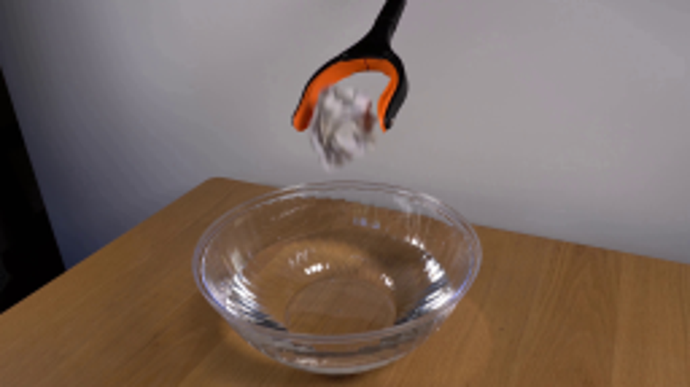
视觉工具实际返回图片 2
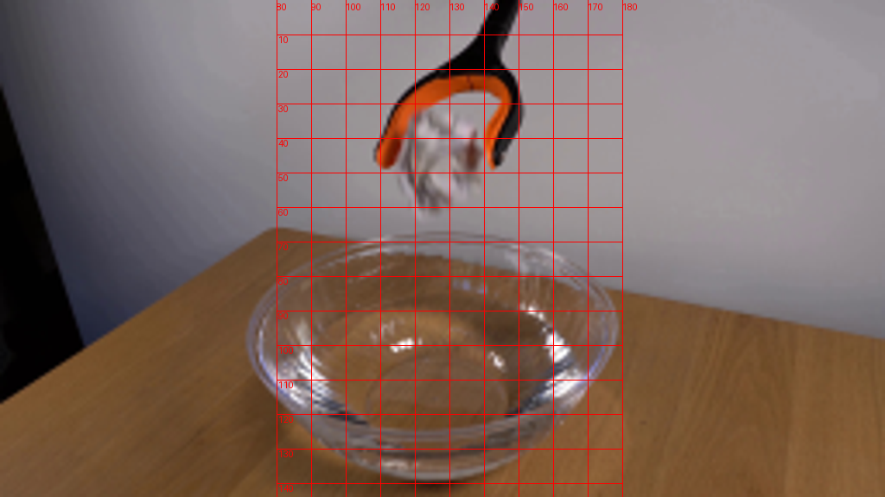
视觉工具实际返回图片 3
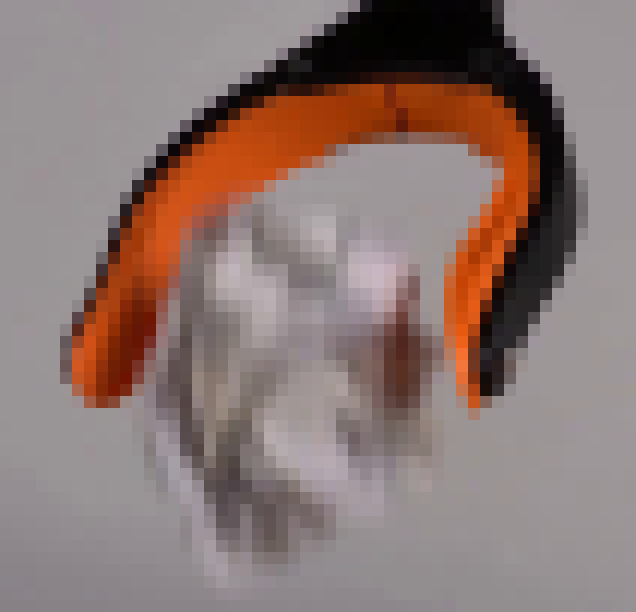
视觉工具实际返回图片 4
视觉工具实际返回图片 5
视觉工具实际返回图片 6

视觉工具实际返回图片 7

视觉工具实际返回图片 8
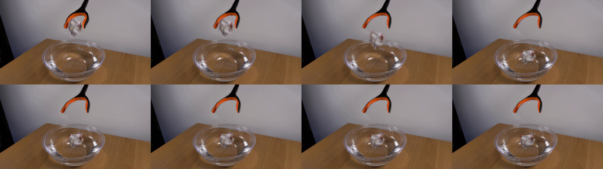
视觉工具实际返回图片 9
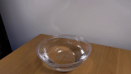
视觉工具实际返回图片 10
视觉工具实际返回图片 11
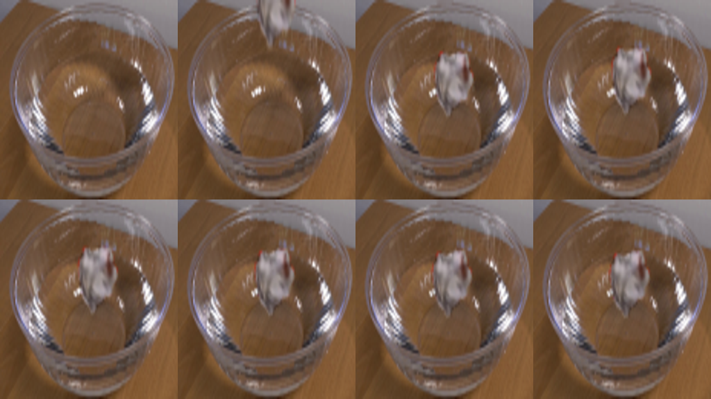
视觉工具实际返回图片 12
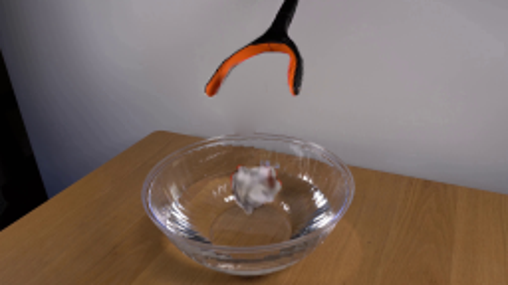
保存候选 3 份；完成命令 11 次；可验证图片返回 12 张。原始 API 响应与完整日志保留在本地。